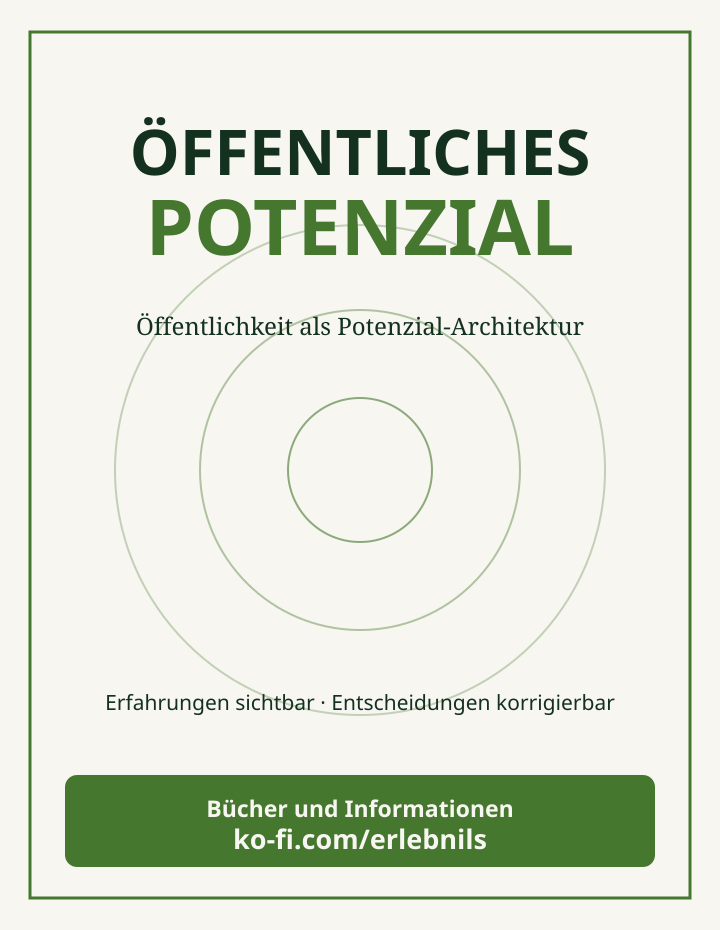
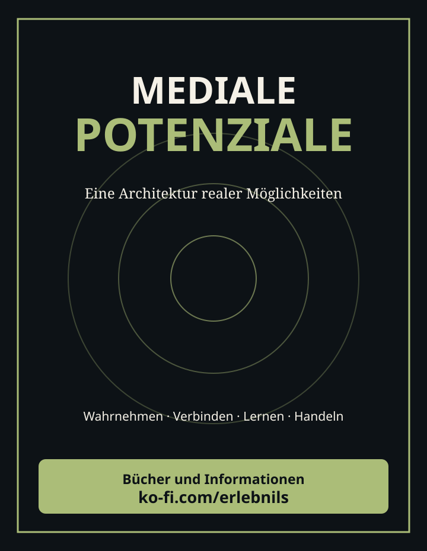

Tensor
Tensor01 · GesundheitsWESEN
Welche Arzneimittel- und Versorgungsmodelle erreichen Menschen tatsächlich?
Welche Lösungen existieren bereits – und wie können Menschen, Wissenschaft, Methoden und Ressourcen so zusammenkommen, dass sie tatsächlich nutzbar werden?
Zusammenkommen · Kartographieren · Verbinden
SOULution.meForschung mitgestaltenSOULution ist als offener kollektiver Prozess und Lösungswerkstatt angelegt. Vorhandene Lösungen werden mit ihren Quellen kartographiert, vergleichbar gemacht und mit Menschen, Wissen und Umsetzungsmöglichkeiten verbunden. Die wissenschaftlichen und technischen Teilmodelle sind unterschiedlich weit entwickelt; die Dokumentation ersetzt keine bereits nachgewiesene praktische Umsetzung.
Neun unterschiedliche Fragenräume, ein gemeinsames Ziel: vorhandene Lösungen quellenbasiert erschließen und ihre Voraussetzungen sichtbar machen.
Welche Arzneimittel- und Versorgungsmodelle erreichen Menschen tatsächlich?
Wie können Menschen zusammenkommen und Entscheidungen verbessern?
Wie lassen sich offene Lernressourcen zugänglich vernetzen?
Wie werden tragfähige Lösungen für Wasser und Ernährung erreichbar?
Welche digitalen Gemeingüter und geprüften KI-Werkzeuge helfen?
Wie werden Ursachen, Expositionen und wirksame Ansätze ermittelt?
Welche Modelle sichern Zugang, Fähigkeiten und Grundversorgung?
Wie lassen sich erneuerbare und gemeinschaftliche Lösungen verbinden?
Welche belegten Prozesse beugen Gewalt vor und fördern Frieden?
Beide Projekte verbinden wissenschaftliche Modelle mit konkreten Fragen und Lösungsmöglichkeiten. Der KI-Tensor untersucht Relationen, Formeln und ausführbare Fähigkeiten; SOULution entwickelt daraus mögliche Wege zwischen Bedürfnissen, Ressourcen und Prozessen.

Drei relationale Trinitäten bilden den 3×3×3-Raum. Quellen, Relationen und Tests prüfen die wissenschaftliche Erklärung.

Vorhandene Lösungen werden mit Bedarf, Fähigkeiten, Voraussetzungen und möglichen nächsten Schritten verbunden. Die Qualität der Verbindung bleibt überprüfbar.
Jede Verbindung zeigt eine andere Forschungsfunktion und führt zum zuständigen Arbeitsbereich.
Wissenschaftliche Quellen, Methoden und Standards erschließen.
ForschungsbestandPassende ausführbare Fähigkeiten auswählen und kombinieren.
Mini-KI verstehenBeziehungen und Übergänge mathematisch rekonstruieren.
Modelle vergleichenDie Forschungsbestände erschließen die Themen von den Grundlagen über das Codebuch bis zu Bildungs-, Medien- und Gestaltungsfragen. Die einzelnen Bestände werden zu wissenschaftlich vertieften Papers mit Quellen, Modellen, Alternativen und Prüfverfahren ausgebaut.
Wie das gemeinsame Kartographieren, Verbinden und Mitgestalten funktioniert.
Inhalt und Quellen auf GitHubGraphen, Potenziale, Prozesse, Fragen, Rollen und prüfbare Operationen.
Inhalt und Quellen auf GitHubForschungsarchitektur, 27 Kernpapiere, Methoden und praktische Prüfpfade.
Inhalt und Quellen auf GitHubFrei zugängliche Lernmedien und ihre Verbindungen zu neun Themenfeldern.
Inhalt und Quellen auf GitHubMedien- und KI-Strukturen, Risiken, bestehende Lösungsansätze.
Inhalt und Quellen auf GitHubBereichsfarben, Publikationsgestaltung und gemeinsame visuelle Sprache.
Inhalt und Quellen auf GitHubVerwandte Forschungsbestände in der Tensor-Bibliothek · Papers wissenschaftlich ausarbeiten (Mitmachaufgabe)
Vom vorhandenen Wissen zu prüfbaren Beziehungen, Werkzeugen und Aufgaben: Die Forschungsbereiche sind miteinander verbunden und über ihre jeweiligen Fachseiten erreichbar.
Publikationen, Formeln und Methoden erschließen; Datenherkunft und Prüfschritte nachvollziehen.
Forschung und VerarbeitungWissenschaftliche Relationen, drei Trinitäten und die 27 adressierbaren Positionen prüfen.
Tensoralgebra und PrüflogikOperatoren, Tests, Orchestrierung und dokumentierte Fähigkeiten verbinden.
Minimal-KI erforschenFormen generieren, Verfahren kombinieren und wissenschaftliche Datenformate anschließen.
Geo-KI · InteroperabilitätQuellen, Modelle, Begriffe und historische Forschungsbestände verfügbar halten.
Bibliothek · GlossarOffene Fragen als Forschungsaufgaben bearbeiten, dokumentieren und überprüfen.
Projektstand · Aufgaben übernehmenÖffentlichkeit entsteht nicht allein durch Reichweite. Erst wenn Erfahrungen sichtbar, gemeinsame Positionen erkennbar und Entscheidungen korrigierbar werden, können aus Informationen neue Handlungsmöglichkeiten entstehen.

Ein Theorie- und Praxisbuch über die Bedingungen, unter denen Menschen gemeinsame Angelegenheiten erkennen, bestreiten, gestalten und korrigieren können. Mit Öffentlichkeitsaudit und zwölf Goldenen Ankerpunkten. Auf Wunsch kostenfrei.
Buch und Informationen
Vom Marktplatz über Stream, Software, Lernmedium und Benutzeroberfläche bis zu Netzwerken, medialem Feld und verbindlichen Systemen. Das Buch untersucht, wie aus isolierter Lösungskraft übertragbare Folgepotenziale entstehen.
Buch und InformationenWie werden öffentliche Haushalte, Geldflüsse und politische Entscheidungsalternativen so zugänglich, dass Menschen Zusammenhänge selbst nachvollziehen können? Eine kompakte Forschungsfassung verbindet Finanzsimulation mit demokratischen Beteiligungs- und Korrekturfunktionen.
Vorhandene Lösungswege, wissenschaftliche Modelle, Standards und ihre Geltungsbedingungen vergleichen, belegen und weiterentwickeln.
ForschungsbibliothekFähigkeiten, Menschen und Projekte verbinden. Kleine Schritte planen, Ergebnisse dokumentieren und anschließend vergleichen.
Mitmachprojekte ansehenNeue Forschungsreihe: Zwei Bücher, ein öffentlicher Evidenz- und Finanzfluss-Pilot, fünf Mitmach-Einstiege. Status: Entwicklung; Publikation und Datentest nicht abgeschlossen.
Was wurde beschlossen und mit welchen Erkenntnissen begründet? Welche Mittel wurden tatsächlich eingesetzt, was wurde erreicht, welche Prüfungen sind fällig, und was wurde aus ihren Ergebnissen? SOULution verbindet solche Bürgerfragen mit Originalquellen, vorhandenen Lösungen und überprüfbaren Aufgaben. Eine reine Prompt-Fragenschmiede ist eine optionale Ergänzung, kein Ersatz der öffentlichen Rechenschaftsfrage. Technische Forschungsanschlüsse.
Bürger können öffentliche Rechenschaft anhand nachvollziehbarer Quellen und Methoden untersuchen. Die Promptbibliothek bietet Einstiege und anspruchsvolle Forschungsaufträge; bestehende Skills, Agentenideen und Meta-Fragen werden getrennt dargestellt. Promptbibliothek mit Status und vollständigen Texten öffnen · Maschinenlesbares Register.
Vertiefungen: Weltwissen, Recht an der digitalen Persona und gesellschaftliche KI-Dividende · Schrödinger’s Inkubator – gemeinsame Softwaregrundbausteine für digitale Souveränität.
SOULution untersucht die öffentliche Rechenschaft hinter KI-Systemen: Wie wurden Trainingswerke beschafft, welche Rechte gelten, wer wurde beteiligt und vergütet, und welche Institutionen kontrollieren die Nutzung? Unser ausführliches Dossier zu Sprecher-, Synchron- und Musikorganisationen stellt BFFS, VDS, GEMA, GVL, Musikrat und weitere Organisationen mit ihren nachgewiesenen unterschiedlichen Positionen vor. Die KI-Kernforschung untersucht davon getrennt die technischen Fragen wissenschaftlicher Kernskills, der Vernetzung und der Tensorverdichtung. Gerichtsentscheidungen, Vertragspositionen und offene politische Forderungen bleiben unterscheidbar.